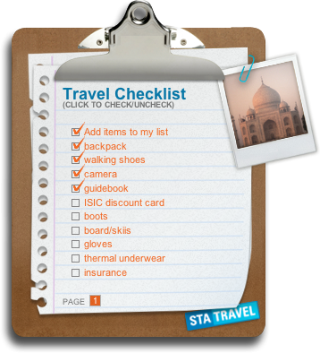

By widgetshow
I know it has been a long, long time but again after some time we will be back in the game. Twice a month we will put out a great widget related podcast and we hope that you will join us as we return in the form of listeners and commenters on this blog. I love widgets but the subject of OSX Widgets have become a bit redundant of late thus after some studying we will be morphing the show into a podcast about
Widgets (Dashbaord, Mac OSX), Vista Gadgets, Web Widgets, Web Applications (iPhone) and Ajax Tutorials.
We hope that you will enjoy this new approach to the show and we welcome your support!
/rating_half.png)
By widgetshow
Today we talk about dictionary and dictionary widget tricks. Dashboard in the iPhone? My iTunes web widgets announced. More web widgets introduced in iWeb. The holy grail of widgets for video editors reviewed. Very Bad Poetry, The History of Apple Widgets. Cube like dashboard interface patent submitted. Tell us which widget you like the best and why, the best answer will win a prize valued at 25.00!
Dictionary Tricks
First, as with text in many OS X applications, you can get the search box to show you possible completions based on the characters you’ve typed so far. How? Just press and hold Control, Option, or Command, then press the Escape key, and you’ll see a drop-down list of possible completions. Scroll or arrow down to the word you’d like to use, press Return, and its definition will appear.
The other trick with the Dictionary widget involves what you can do once you have a definition visible in the widget. Type rain for instance, and you’ll see that rain is moisture condensed from the atmosphere that falls visibly in separate drops. And a very clear definition it is! But see that half-circle with the on it sticking out on the left edge of the widget? Click that, and you’ll see a list of other known words and phrases that start with Click any of those words to jump to their definition; click the link again (before clicking another word), and you’ll switch back to the standard definition.
Toggle the widget from Dictionary mode to Thesaurus mode, and the same trick works here it will show you a list of other words in the thesaurus that are similar to the chosen word. Toggle the rain again, and you’re back to the thesaurus entries for rain.
Iraq War Reference…
1. Bring up dashboard
2. Either add the dictionary widget to the dashboard or select it.
3. Type the word: democracy into the search box.
4. Click on the thesaurus button on the top of the Widget to switch to Thesaurus mode.
5. Read the sample sentence in the description: A democracy in Iraq is quite unlikely for now or any time soon.
Best Widget Contest
Do you have a favorite or useful dashboard widget that you cant live without? Then let us know! The best widget description and reason why you like it could win you a prize valued at 25.00!!!
By widgetshow
I just wanted to sit down and review a few widgets that I absolutely love. These are new widgets that I have been using that I feel have earned merit due to functionality and design. Not only that but they are fun widgets to use in the dashboard!
Plasma Tube Widget
The first one of course is the Plasma Tube widget. This is a great widget that adds more style to your dashboard. Its a lava lamp style tube, but instead of a light its a motion activated stream of exploding plasma. You can select the tube color as well as the glass style and plasma colors, its an entertaining widget that has earned a spot in my dashboard. The Plasma Tube widget is created by Inner Mind Media and you can find it here.
Shredder Widget
I had mentioned this widget on the show basically its a small widget that permanently erases and shreds important files on your computer. No excess menu functions simply click once for a green light or low security shred. Click again for the yellow light or medium security shred and yet again for the red light or high security shred. The Shredder widget is a simple widget wich functionality can not be stated more plainly. The design is unique with a small shredder you will actually see your documents being shred to pieces. The animation is very cool and its a fun way to delete files from your system. The widget was designed by Interdimension Media and you can download it here.
Travel To Do List Widget
I love to travel and so its no wonder I love this widget. Not only am I adventurous I am also forgetful, so this widget makes traveling less painfull. Its a widget that allows you to add any item to a checklist that you want, there are many preset items that you would want to take on a trip but also you can write your own. Its not limited to pages, because you can have as many pages as you need just scroll through on the bottom. Its easy to use, and very useful, and the design is top notch. You can change the picture on the clipboard to reflect where you will travel too, the only thing its lacking is the ability to print but I am sure it will come along in time. Again great widget by Sea Travel, and its available here.
I hope you enjoyed my list of great NEW widgets, keep trying out new widgets and exploring and re-inventing your dashboard area. Please feel free to mention the ones that you love and why in the comments area!